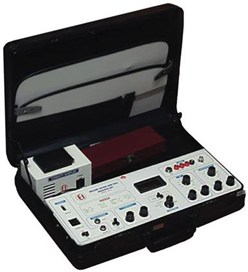
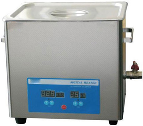

INSTRUMENTS OF TESTING LAB
pH meter
specifications:
- Parameters : pH, mVTemperature
- Readout :128× 64 pixels graphical LCD
- pH Range : -2.000 to 20.000pH
- Resolution : Selectable -0.1,0.01,0.001 pH
- Accuracy : ± 0.002pH ± 1 digitmV
- Range : 0 ₋ ± 1999.9 mV
- Resolution : 0.1 mV
- Accuracy : ± 0.1 mV , ± 1 digit
- Temperature Range : -5 ₋ 110 ℃
- Resolution : 0.1 ℃
- Accuracy : ± 0.1 ℃
Conductivity meter

specifications:
- Parameters : EC, TDS & Temperature
- EC Range: 0 - 20 , 0 - 200 ùõçS/cm,
- Accuracy : ± 1 % F. S. ± 1
- digit Resolution : 0.01 ùõçS/cm
- TDS Range : 0 - 20 ppm, 0 - 200 ppm
- Resolution : 0.01 ppm
- Temperature Range : 0 ₋ 100 ℃
- Resolution : 0.1 ℃
- Accuracy : ± 0.1 ℃
Soil analysis kit

specifications:
- pH Range : 0 to 14.00 pH
- Resolution :0.01 pH
- Accuracy : ± 0.01 pH
- Conductivity Range : 0 to 19.99ms/cm
- Resolution :0-20,000 ùõçS/cm
- Accuracy :0.5% of range ± 1 digit
- TDS Range : (0-20, 000 ppm)
- Accuracy : 0.5% of range ± 1 digit
- Salinity Range : 0-20, 000 ppm)
- Accuracy : 0.5% of range ± 1 digit
- Turbidity Detector : Photocell/Photo diode
- Light Source : 6V , 0.3 AMP. Tungsten Lamp
- Optical Density(O.D) : 0-1.99 DO
- Range : 0 to 19.9 ppm
- Resolution : 0.1 ppm
- Accuracy : 0.5 ppm
- Temperature Range : 0 to 60 ℃
- Resolution : 0.1 ℃
- Accuracy : ± 0.5 ℃
Auto Clave
specifications:
- Stainless steel interior
- Digital Temperature indicator
- Digital Temperature controller
- Working Pressure : 15 to 20 psi
- Working Temperature : 121 ℃ to 125 ℃
Orbital shaker incubator
specifications:
- Shaking Platform Size : 12”×12”
- FlaskCapacity:250ml×/500ml×4/1000ml×4
- Shakin Speed: 0 to 250 rpm ( ± 1rpm)
- Temperature Range : 0 - 110 ℃
sonicator

specifications:
- Voltage : AC 200V, 50 z / 60Hz
- Ultrasonic Frequency : 40 KHz
- Working hours : 8
- Capacity : 9 L
- Heating Range : 1-80 ℃
- Time Range : 1-60 ℃